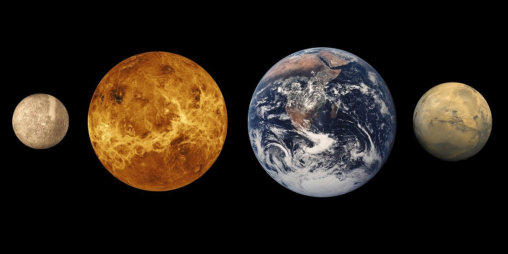
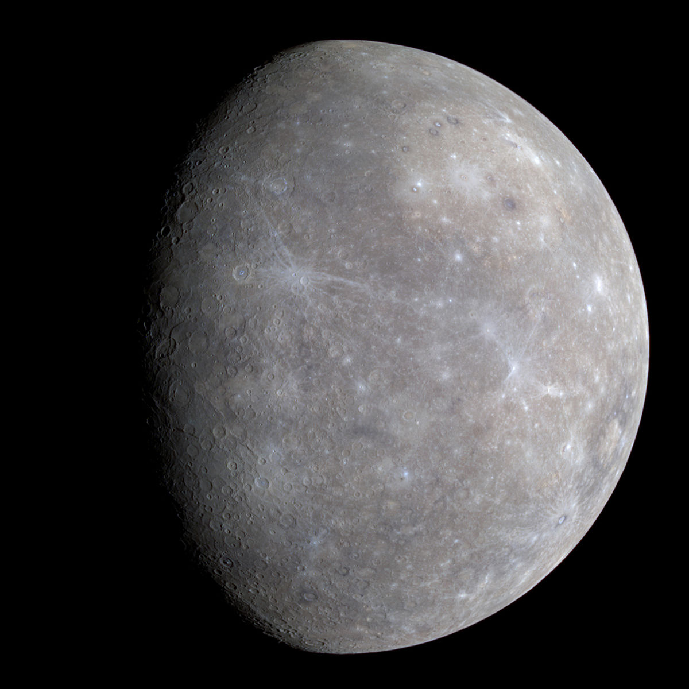
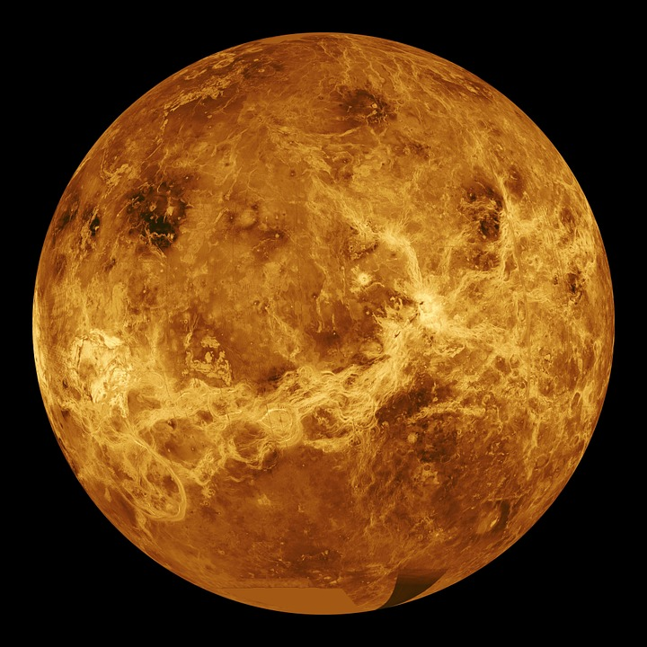

The Inner Planets
The inner planets are the four closest planets to the sun and they all rest between the asteroid belt and the sun. The inner planets are recognizable by their smaller size and rocky composition. They are mostly made of rock, metal, and other solids, although an atmosphere is also common. Despite their proximity, each inner planet is very different from the others.

Mercury
Mercury is the closest planet to the sun and is also the smallest. Because of it's proximity to the sun, Mercury is a desolate wasteland. Mercury isn't only hot though, as the planet has the largest temperature range of any in the solar system. During the day, Mercury's surface reaches temperatures of 427° C (800° F). During the night, Mercury's surface temperature can drop as low as -180° C (-280° F). Mercury's small mass means it doesn't have an atmosphere either, which leaves it subject to bombardments not only by meteorites but by the intensely radioactive solar winds.

Venus
Venus is the second closest planet to the sun and is about the same size as Earth. Venus' atmosphere is the densest of the inner planets, and causes a greenhouse effect on the planet. Temperatures on Venus range from 462°C - 467°C (864°F - 873°F) The temperature range on Venus is so low due to it's greenhouse atmosphere that keeps the planet so warm. On the surface of Venus, lead would melt, but it would be crushed into a pancake first because of the atmospheric pressure, which is 92 times that of Earth. Venus' notorious atmosphere is made up of around 96.5% Carbon Dioxyde, 3.4% Nitrogen, and trace amounts of other gasses.

Earth
Earth is the third planet from the sun, and the only one known to have life. Earth is so sustanaible for life because of it's large amounts of liquid water and non-toxic atmosphere. Earth's temperature ranges from -81°C - 47°C (-114°F - 117°F) on the surface, the average global temperature is around 15°C (59°F), within the range to sustain liquid water. It is also the largest of the inner planets, and contains the strongest magnetic field in the solar system. This magnetic field protects it from solar wind and other radiation from space. The atmosphere on Earth is also dense enough to stop almost all meteors from reaching the surface.

Mars
Mars is the fourth planet from the sun and is the coldest of the inner planets. Mars' surface is red due to the iron oxide (rust) in the soil. Mars has a thin atmosphere and temperatures ranging from -73°C - 20°C (-99°F - 68°F). However, warmer temperatures on Mars don't last long and can't sustain melted water. The thin atmosphere and lack of strong magnetic field allows meteorites and solar winds to bombard the planet. Despite the downfalls, Mars is the most likely place for humans to expand to in the near future.